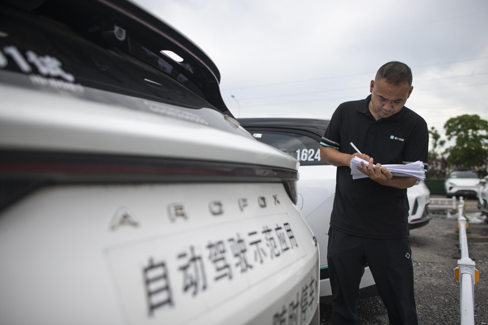

路透5日引述知情人士报导，美国商务部预计在未来数周内提议禁止在自动驾驶和连网汽车中搭载中国的软件。报导称，拜登政府计划发布一项草案，禁止在美国三级或以上自动化车辆中使用中国软件，这也意味将禁止中国企业生产的自动驾驶汽车在美国国内道路上进行测试。
消息人士补充说，美国政府还计划提议禁止配备中国开发的先进无线通信能力模块的车辆在美国道路上行驶。
美国众议院6月26日曾召开两场涉及中美贸易的听证会，美国商务部长雷蒙多在其中一场听证会表示，商务部正在草拟相关规定，要求中国电动车的所有数据都必须存放在美国。
雷蒙多出席众院创新、数据和商业小组委员会听证会时也称，有关规则内容的决定尚未做出。
报导引述雷蒙多在众议院能源和商业委员会对一名共和党小组成员的说法指出，美国在最极端的情况下可能禁止联网汽车进入美国。美国也可能要求电动车所用软件必须是美国制造的，也可要求数据必须驻留在美国。
雷蒙多5月15日曾说，美国商务部以美国民众的数据面临国家安全风险为由，计划今秋发布针对中国联网汽车的草案。